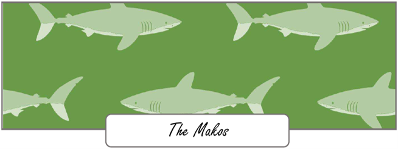

The Makos group is the last of the three Learn to Swim groups that PEA runs. We chose to name the group after this fish because the mako shark is an apex predator and the fastest shark in the world. This perfectly aligns with the final skills we teach and focus on in our Learn to Swim Programme: introduction to butterfly kicking, teaching breaststroke, and refining both backstroke and freestyle. Much like the mako shark's swift and powerful movements in the ocean, our swimmers in the Makos group are ready to refine their swimming techniques and develop speed and efficiency in the water.
In this group, we teach breaststroke, a stroke that relies on good timing. Swimmers learn to coordinate their pulls, kicks, and breathing. We focus on making sure each part of the stroke is done correctly, helping swimmers move smoothly through the water.
Finally, we refine the backstroke and freestyle techniques that have been introduced in earlier stages of the programme. Swimmers in the Makos group continue to build upon their foundation, improving their stroke competency and speed. They learn how to breathe properly while swimming and make adjustments to their technique to swim faster and with more control.
The Makos group is all about pushing swimmers to reach their goals. By the end of this stage, swimmers not only refine the key strokes but also build confidence in their swimming ability, just like the mako shark confidently moves through the water as the fastest predator in the ocean.
If you're putting this on a website, I can also rewrite all three sections into shorter, more professional marketing copy that's easier for parents to read online.
Back